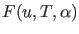
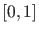
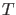
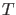

Next: Plotting the output of Up: Continuation of limit cycles Previous: Mathematical definition Contents
In MATCONT limit cycles are discretized using orthogonal collocation [6], the same way as it was done in AUTO [12]; the left hand side of the resulting system is the defining function  for limit cycles.
In practice this means that the normalized time interval  is divided in a number ntst (number of test intervals) of intervals with variable lengths; the (ntst+1) endpoints of these intervals form the coarse mesh. Each interval is further subdivided in a number ncol (number of collocation points) of subintervals with equal lengths. So altogether there are (ntst ncol + 1) fine mesh points. The state variable values are collected in the points of the fine mesh. The limit cycle itself is then approximated by a continuous piecewise polynomial which is a polynomial of degree ncol in each of the ntst coarse mesh intervals.
If the number of phase variables is denoted by nphase then altogether
(ntst ncol nphase)
state variable values are stored, since by periodicity
the values in the endpoints  and
and  must be identical. But the number of continuation variables is
must be identical. But the number of continuation variables is
((ntst ncol +  ) nphase)+2
) nphase)+2
since the state variable values in both  and
and  are stored and the period  and a free system parameter must be included. They are stored in the output vector
are stored and the period  and a free system parameter must be included. They are stored in the output vector
 of a limit cycle continuation in that order, after all state variable values.
of a limit cycle continuation in that order, after all state variable values.
The coarse mesh is adapted after each number of Adapt continuation points, cf §3.4.9. We note that ntst and ncol are input arguments of the routines that initialize the continuation of limit cycles but are not explicitly found in the output of the continuation; however, they are preserved as fields in the global structure lds.